Online Portfolio
This project is my personal portfolio made with HTML, CSS, JavaScript and Three.Js
Project Description
Welcome to my Portfolio Website Project, a personal endeavor that encapsulates my journey and growth as a web developer and designer. This project is more than just a collection of my work; it's a reflection of my passion for innovative web technologies and design.
Technical Highlights: At the heart of this project is my first-ever integration of 3D animation into a website, achieved using three.js. Furthermore, the project served as an avenue to significantly enhance my CSS, HTML, and JavaScript skills, with a special focus on responsive design, user interface, and interactivity.
Learning and Growth: This project has been a significant milestone in my professional development. It challenged me to blend technical skills with creative thinking, problem-solving, and project management, all while working independently.
Looking Forward: As I continue to evolve as a web developer, this portfolio website will grow with me, reflecting new skills, projects, and experiences. It stands as a living testament to my dedication to my craft and my journey in the ever-changing world of web development.
Technical Learning Outcomes
The centerpiece of this enhancement was a draggable 3D world map, designed to offer users a dynamic perspective of the globe. By allowing users to change their point of view, I aimed to create a more immersive and interactive experience. This was achieved through the integration of Three.js code into my portfolio, marking it as one of my initial forays into combining advanced graphics with user interaction in web design. The implementation involved setting up a responsive Three.js scene within a designated container on the webpage. Key to this setup was ensuring that the 3D animation adjusted seamlessly to window resizing, maintaining its functionality and aesthetic appeal across different devices. The code snippet below illustrates the foundational aspects of this feature: This project served as a practical testament to my commitment to incorporating cutting-edge trends in digital experience design. The code snippet provided offers a glimpse into the technical depth of the project, showcasing the application of HTML, CSS, and JavaScript in concert with Three.js for 3D modeling and interaction design. This achievement was further bolstered by leveraging AI tools and resources to accelerate the research and learning process, ensuring that the information I needed was readily accessible and enabling me to stay at the forefront of industry trends. So as a conclusion through this project, I not only enhanced my technical skills in web development and 3D animation but also deepened my understanding of the importance of keeping pace with technological advancements in creating engaging user experiences. The inclusion of the interactive 3D world map in my portfolio is a direct reflection of my dedication to innovation, user-centric design, and continuous learning in the dynamic field of ICT & Media Design.
let animationContainer = document.getElementById('animation-container');
document.addEventListener('DOMContentLoaded', function() {
init();
// Handle window resize for Three.js
window.addEventListener('resize', function() {
const animationContainer = document.getElementById('animation-container');
renderer.setSize(animationContainer.clientWidth, animationContainer.clientHeight);
camera.aspect = animationContainer.clientWidth / animationContainer.clientHeight;
camera.updateProjectionMatrix();
});
});
let scene, camera, renderer, animalMesh;
let isDragging = false;
let previousMousePosition = {
x: 0,
y: 0
};
function init() {
// Scene setup
scene = new THREE.Scene();
scene.background = new THREE.Color(0x52796F);
// Camera setup
camera = new THREE.PerspectiveCamera
(40, animationContainer.clientWidth / animationContainer.clientHeight, 1, 5000);
camera.rotation.y = 45 / 180 * Math.PI;
camera.position.set(800, 100, 1000);
// Renderer setup
renderer = new THREE.WebGLRenderer({antialias: true});
renderer.setSize(animationContainer.clientWidth, animationContainer.clientHeight);
animationContainer.appendChild(renderer.domElement);
// Ambient light
let hlight = new THREE.AmbientLight(0x404040, 1 );
scene.add(hlight);
let directionalLight = new THREE.DirectionalLight(0xffffff, 0.5);
directionalLight.position.set(0, 1, 0);
scene.add(directionalLight);
console.log(camera);
console.log(scene);
camera.position.set(0, 0, 5);
camera.lookAt(0, 0, 0);
console.log(animalMesh);
// GLTF model loading
let loader = new THREE.GLTFLoader();
loader.load('animated/scene.gltf', function(gltf) {
console.log("Model loaded!");
animalMesh = gltf.scene.children[0];
animalMesh.scale.set(2, 2, 2); // Normal scale
animalMesh.position.set(0, 0, 0); // Center the duck
scene.add(gltf.scene);
animate();
}, undefined, function(error) {
console.error("Error loading model:", error);
});
// Mouse event handlers
document.addEventListener('mousedown', onMouseDown, false);
document.addEventListener('mousemove', onMouseMove, false);
document.addEventListener('mouseup', onMouseUp, false);
}
function isCursorInContainer(e) {
const containerBounds = animationContainer.getBoundingClientRect();
return e.clientX >= containerBounds.left && e.clientX <= containerBounds.right &&
e.clientY >= containerBounds.top && e.clientY <= containerBounds.bottom;
}
section class="main-content">
header id="animation-container" class="draggable-header">
nav class="top-nav">
div class="logo">
img src="cssfiles/static/logo.png" alt="Stefan Tomescu Logo" class="name-logo-artwork" id="home-link">
/div>
p class="greeting-artwork">Artwork
/nav>
div class="overlay">
p>Interactive Art Experience
/div>
/header>
From the onset, my digital portfolio was a canvas reflecting my creativity and technical skill. It began as a vibrant tapestry of gradient colors—light blues and greens—that mirrored the dynamic nature of the projects it housed. Each page bore a distinct color scheme, a testament to the individuality of the work it presented. However, this eclectic approach, while full of character, lacked the cohesive visual language that underpins professional design. Constructive criticism became the catalyst for transformation. Feedback highlighted the need for a more harmonious color palette and underscored the importance of a consistent thematic thread throughout the portfolio. Taking this to heart, I embarked on a series of iterative revisions. The first order of business was reevaluating the color scheme. The initial palette's vibrancy, though eye-catching, was overwhelming. I opted for a more subdued approach, selecting colors that would not only complement each other but also provide a neutral backdrop that would allow my work to stand out—this included retiring the harsh gradients in favor of solid colors that were easier on the eyes and lent a professional polish to the portfolio. Feedback also prompted me to expand the portfolio's content. The addition of an artwork page became a personal showcase, offering a window into my creative endeavors beyond digital projects. It was an avenue to display my drawings, which are as much a part of my creative identity as my technical projects. Through this iterative journey, the vital lesson was clear: feedback is indispensable. Initial self-satisfaction with my portfolio's design gave way to a broader appreciation for user experience and aesthetic harmony. Each round of feedback sharpened my design decisions, teaching me that good design is not just about personal taste but about how well it communicates and resonates with the audience. As I continue to grow and produce new work, my portfolio will evolve in parallel. The iterative process is far from over; it is an ongoing dialogue between design and response, an endless pursuit of improvement and excellence.
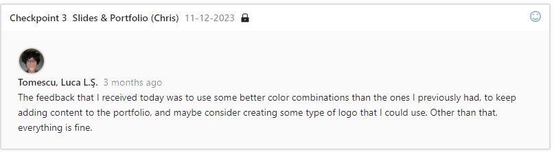
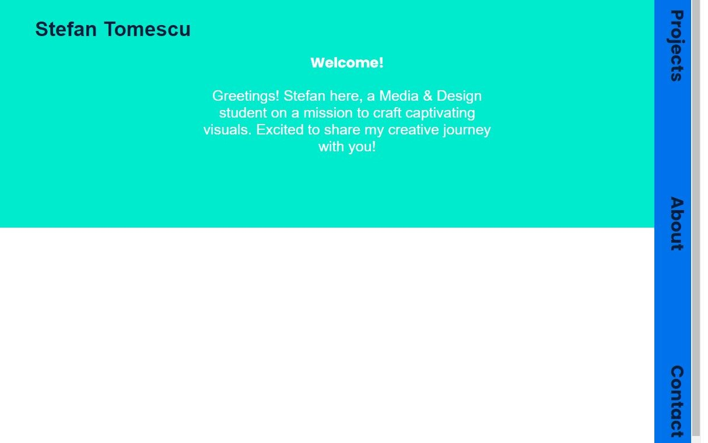
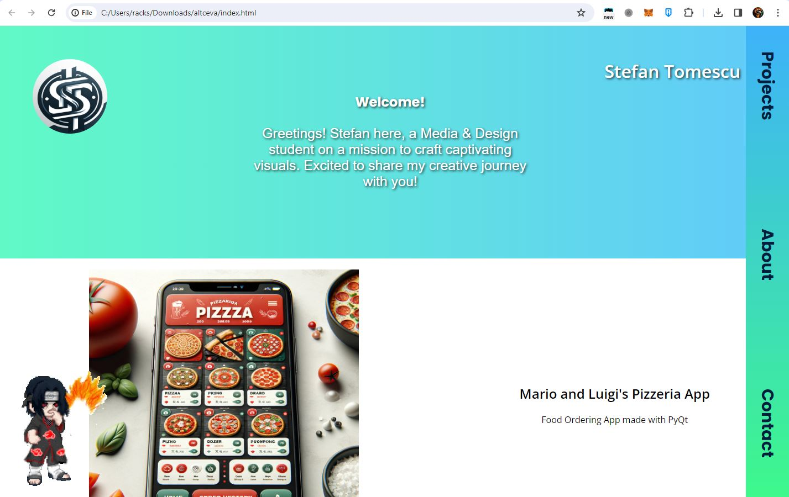
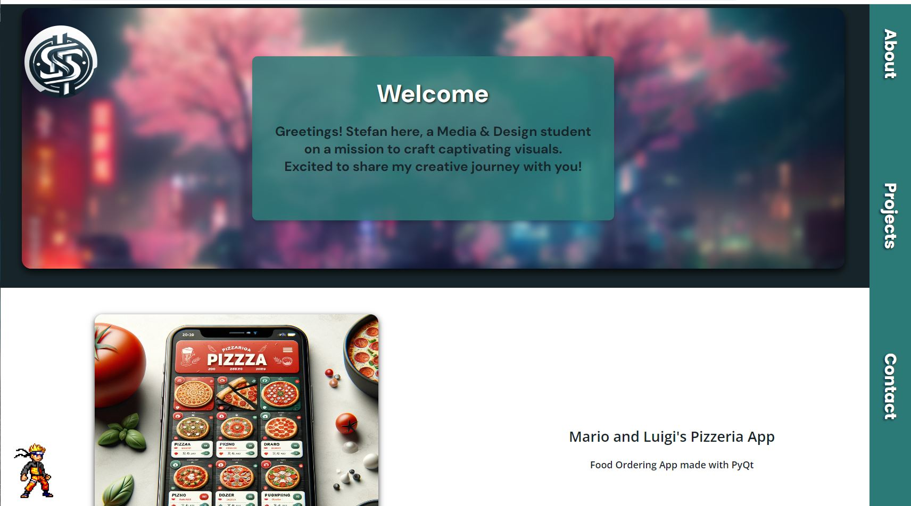
In the realm of digital design, interactive prototypes stand as pivotal touchpoints between the user and the digital environment. My journey in crafting these prototypes is exemplified through the continuous evolution of my online portfolio—a digital space not only to showcase my projects but also to embody the principles of interactivity I champion. The initial layout of my portfolio was grounded in a grid structure, where text and images alternated in rows and columns—a conventional approach that provided a straightforward narrative of my work. However, as interactive elements became increasingly crucial for engaging viewers, I recognized the need for a layout that not only informed but also involved the audience. Through iterative feedback, the portfolio underwent significant changes. I transitioned from the static grid layout to a more dynamic structure, incorporating modal boxes to detail learning outcomes and a slideshow at the bottom of the page, adding a layer of interactivity to the browsing experience. The hero section of the main content became the first point of interaction, greeting visitors with a personal message and immediately immersing them in my creative journey. The sidebar and header were redesigned to not only improve aesthetics but also to streamline navigation, ensuring that each interaction with the portfolio was intuitive and meaningful. Reflecting on the design choices and their impact on user engagement has been an invaluable learning experience. The feedback-driven iterations have not only improved the portfolio's aesthetics but have also honed my ability to create interactive prototypes that resonate with users.
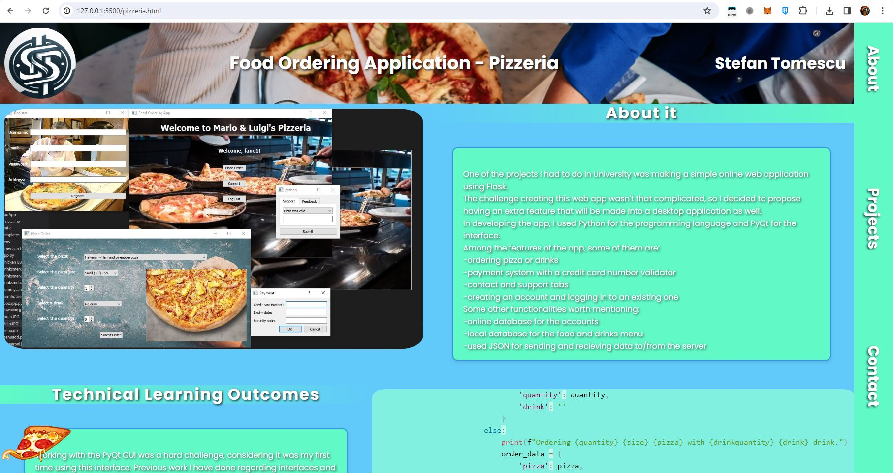
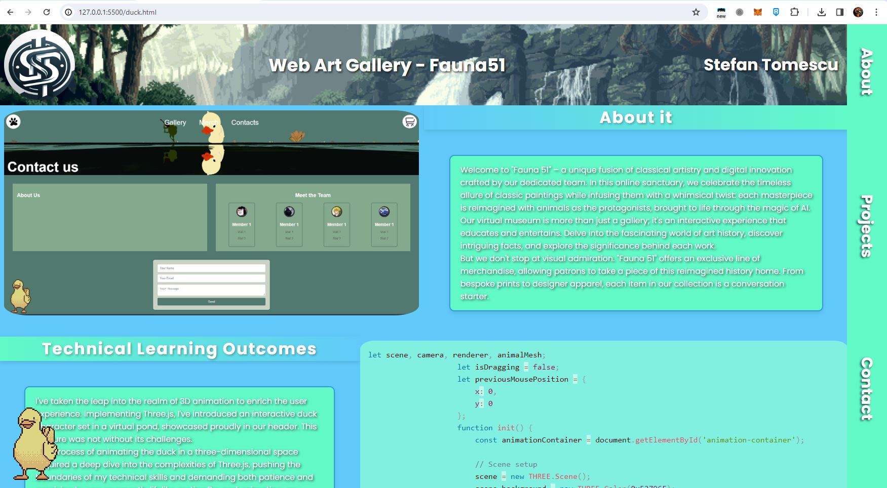
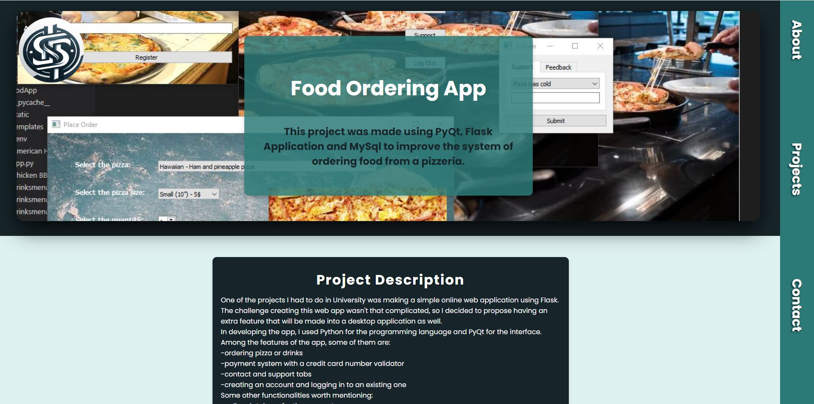
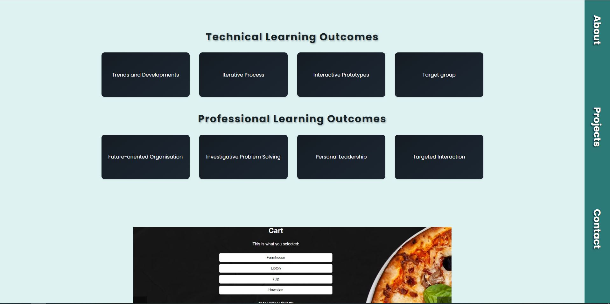
Creating a digital experience that resonates with users requires more than just aesthetic appeal; it demands a deep understanding of the end-user's needs and preferences. My journey in developing my online portfolio has been a testament to this user-centric approach, particularly reflected in the enhancements made to the artwork page. An insightful piece of feedback from a teacher revealed a usability issue with the 3D model world map—an interactive feature that allowed users to drag and change their view. However, it was not immediately apparent to users that this interaction was possible. Acting on this feedback, I implemented a hover effect that cast a shadow over the header and displayed text indicating an "Interactive Art Experience." This subtle yet effective change was complemented by a cursor update, transforming it into a visual cue that encouraged user interaction. Further feedback indicated that the text within the portfolio was challenging to read—white text with shadows on a light green background. In response, I refined the text boxes to enhance readability. These changes demonstrate a commitment to accessibility and ease of use, ensuring that content is not only visible but also comfortable to read. The feedback-driven changes have been pivotal in achieving the current version of my portfolio, which I consider to be its best iteration yet. This process has underscored the value of user feedback in the design cycle—each suggestion and critique has been a stepping stone towards a more refined and user-oriented product. Today, my portfolio stands as a clear representation of my design ethos: attentive to the user, adaptable, and always evolving. It's not just a collection of my work but a showcase of a design process that holds the target group's needs at the forefront. As I continue to grow as a designer, the feedback loop remains open, ensuring that my portfolio will never stop improving, just as my skills and understanding of user experience continue to expand.
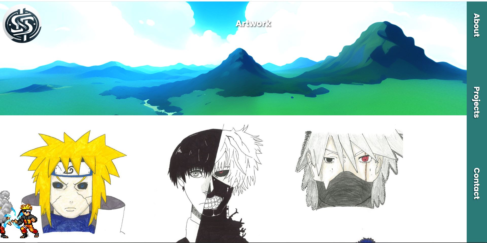
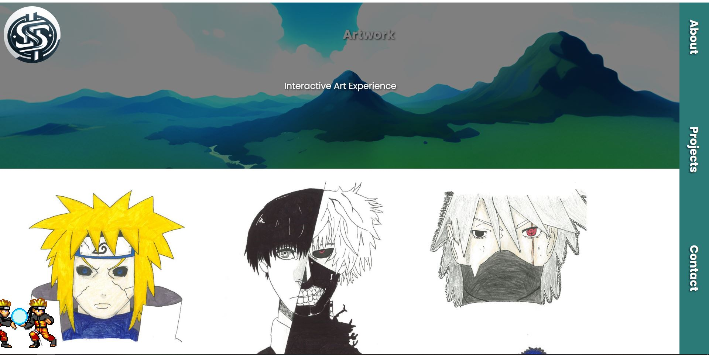
Professional Learning Outcomes
In crafting my online portfolio, I embraced a future-oriented approach, meticulously planning the project's progression while remaining agile to feedback and evolving requirements. The journey began with a clear structure—prioritizing the landing page, followed by 'Contact' and 'About' sections, ensuring foundational consistency before adding the complexity of project pages and an artwork gallery. The planning phase involved breaking down the project into manageable tasks, setting a development timeline that allowed for both focused work and flexibility for iterations. The landing page, as the entry point of the portfolio, received due diligence to immediately convey my professional identity. Subsequent sections were approached with the same attention to detail, ensuring a coherent user experience across the entire portfolio. Feedback became a cornerstone of the project's evolution. Initial input on the layout affirmed its functionality and responsiveness, while highlighting opportunities for creative enhancement. This propelled me to infuse the design with elements that showcased my creative flair, such as the interactive 3D world map, while continuously populating it with my latest work. Further feedback highlighted the need to refine the color palette and improve the alignment of elements within the portfolio. Acknowledging the critical role of color and layout in user perception, I undertook a deliberate redesign, enhancing the visual harmony and reinforcing the portfolio's accessibility. The outcome is a portfolio that not only represents my current capabilities but is also primed for future growth. By adopting a future-oriented organisational strategy, I've laid a foundation that anticipates change, values user feedback, and embodies the adaptability required in the ever-evolving field of media and design.
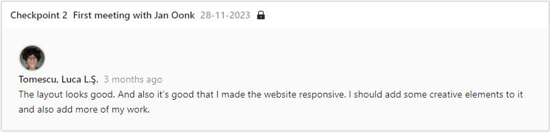
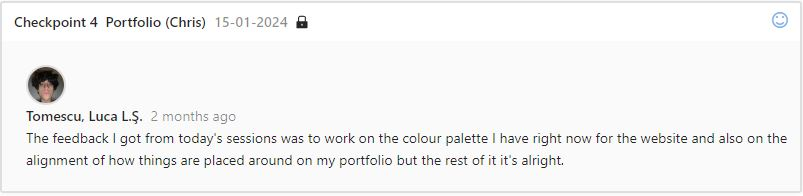
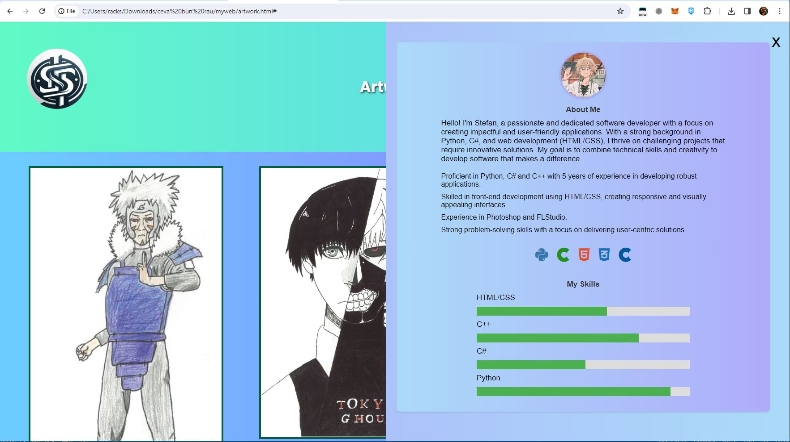
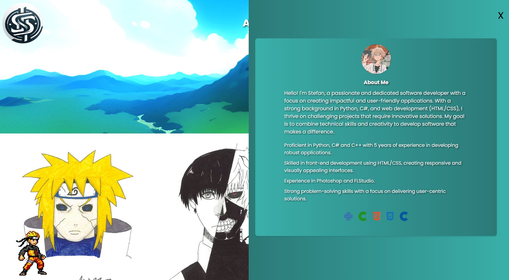
Developing my online portfolio served as a rigorous exercise in investigative problem solving, particularly when confronted with the dual challenges of achieving full responsiveness and aligning elements harmoniously across different devices. Each piece of feedback represented an opportunity to delve deeper into the intricacies of web design and user experience. The journey began with the realization that true responsiveness requires more than just technical adjustments; it demands a reconsideration of layout and design to cater to a wide range of devices. The feedback loop was crucial, providing me with diverse perspectives that highlighted areas for improvement. To tackle these challenges, I turned to W3Schools for guidance on best practices in responsive design and alignment techniques. Additionally, the integration of a 3D animation feature led me to explore AI tools, which offered advanced solutions that were both efficient and effective. Each piece of feedback was critically analyzed, not just accepted at face value. I assessed the suggested changes against the overall design vision and user experience goals. This analytical approach led to informed decisions that significantly enhanced the portfolio's usability and aesthetic appeal. Changes were methodically implemented, from restructuring the layout to refining the alignment of elements, ensuring a seamless experience across all device sizes. The transformation of the portfolio, guided by a blend of external feedback and personal research, resulted in a more intuitive and visually cohesive platform. The before-and-after comparisons of the site's layout and responsiveness not only serve as proof of the problem-solving process but also reflect the evolution of my design philosophy.
@media screen and (max-width: 600px) {
h1, h2 {
font-size: 1.6vw;
}
p {
font-size: 0.8vw;
}
}
@media screen and (max-width: 800px) {
.logo {
height: 7vw;
}
.header-title {
font-size: 3.5vw;
}
}
/* Adjusting for Small Screens */
@media screen and (max-width: 600px) {
.logo {
height: 10vw;
}
.header-title {
font-size: 5vw;
}
}
@media (max-width: 768px) {
.outcomes-grid {
grid-template-columns: 1fr; /* Stack cards on smaller screens */
}
.learning-outcomes-category {
margin-bottom: 30px; /* Less space between categories on smaller screens */
}
}
/* Responsive considerations */
@media (max-width: 768px) {
.learning-outcomes {
grid-template-columns: repeat(auto-fill, minmax(200px, 1fr)); /* Adjust card size on smaller screens */
}
.outcome-card {
padding: 15px;
height: 80px; /* Adjust height for smaller screens */
}
}
@media screen and (max-width: 600px) {
.project-feature {
flex-direction: column;
}
.project-image img, .project-description {
width: 80%;
}
.sidebar a {
font-size: 14px;
max-height: 3em;
}
.sidebar {
position: static;
}
.content, .sidebar {
width: 100%;
}
body, p, h1, h2, h3 {
font-size: smaller;
}
.greeting{
font-size: 18px;
}
.intro-text {
font-size: 18px;
}
.name-logo {
top: 20px;
left: 20px;
width: 100px;
height: 100px;
}
}
Embarking on the journey to create my online portfolio, I encountered a transformative opportunity that would not only challenge my existing skills but also expand my horizons—integrating 3D animations and models. Despite being a subject slated for future semesters, the buzz around its relevance and application in digital design piqued my curiosity. Motivated by a desire to push my boundaries, I decided to tackle this challenge head-on, diving into the world of 3D design ahead of schedule. This self-initiated venture into 3D animations was met with its fair share of hurdles. Initial feedback on my work was mixed, with some pointing out areas needing significant improvement. While such critiques could have easily been disheartening, they instead fueled my determination. Acknowledging my status as a novice in this domain, I embraced the feedback as crucial learning points, understanding that each piece of advice was a stepping stone towards refining my skills. The feedback, albeit challenging at times, acted as a catalyst for my personal and professional development. It spurred me on to invest additional time and effort into mastering 3D animation techniques, turning potential setbacks into opportunities for learning and growth. This self-motivated response to criticism exemplifies the essence of personal leadership—recognizing the value of feedback, however tough, and using it constructively to advance one's skills. In reflection, the journey of integrating 3D animations into my portfolio has been a testament to the power of personal leadership. It underscored the importance of seizing opportunities for learning, staying motivated in the face of challenges, and taking responsibility for one's development. By embracing feedback as a fundamental component of growth, I have not only enhanced my technical capabilities but also cultivated a resilient and proactive approach to my studies and future projects.
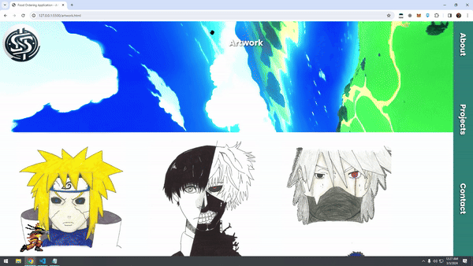
In the development of my online portfolio, targeted interaction was not merely a principle but a practice—a dynamic dialogue between myself and my teachers. Each piece of feedback represented a unique perspective, offering insights that were instrumental in refining my portfolio's design, content, and functionality.
One critical piece of feedback highlighted the inconsistency in my portfolio's color palette and layout. The original pyramid layout, while creative, detracted from the portfolio's coherence and usability. Acting on this advice, I undertook a comprehensive redesign, adopting a more structured and visually harmonious layout that enhanced the overall user experience.
The structure of the sidebar was another area for improvement. Initially prioritizing projects, the feedback suggested a reordering to place 'About' at the forefront, emphasizing my personal and professional narrative to visitors first. This simple yet impactful change aligned the navigation with user expectations, making the portfolio more intuitive and engaging from the outset.
To demonstrate the depth of my engagement with targeted interaction, I maintained detailed records of the feedback received and the subsequent changes made. This documentation serves as a testament to the iterative process of improvement and personal growth:
Feedback Logs: A curated collection of notes and comments from various teachers, detailing their insights and my responses.
Before-and-After Visuals: Side-by-side comparisons of the portfolio before and after specific changes, illustrating the direct impact of stakeholder feedback on the design.
Reflective Analysis: A personal reflection on the feedback process, acknowledging the challenges of receiving critical feedback and the strategies I employed to translate it into constructive improvements.
The journey of refining my online portfolio, guided by targeted interaction with my teachers, was invaluable. It taught me the significance of open communication, the importance of viewing feedback as a resource for growth, and the necessity of adaptability in the creative process. This experience has not only enhanced my portfolio but also fortified my skills in collaboration, critical thinking, and project management—skills that are indispensable in the field of media and design.
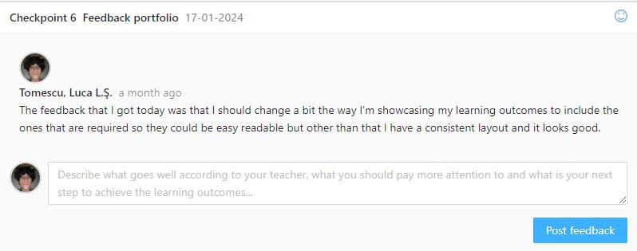
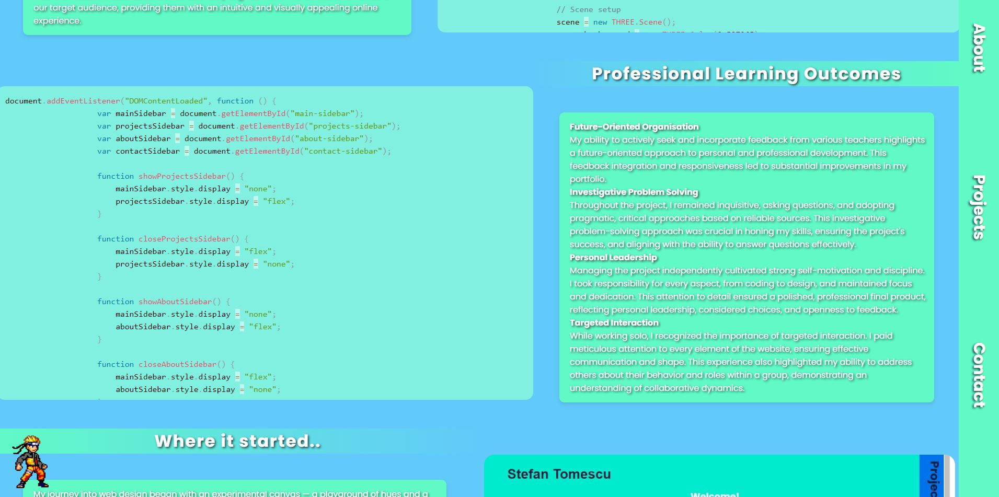
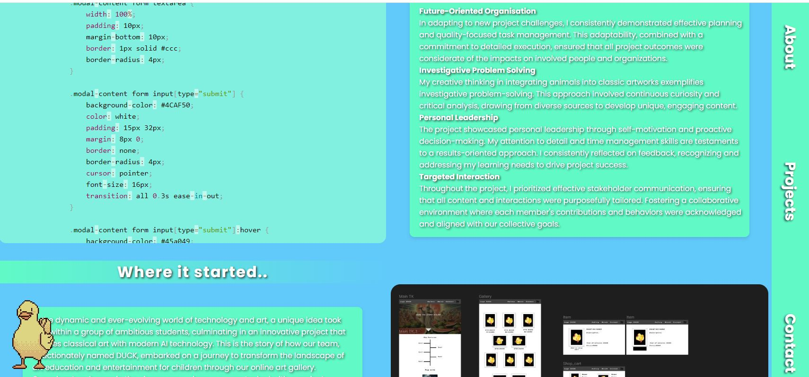
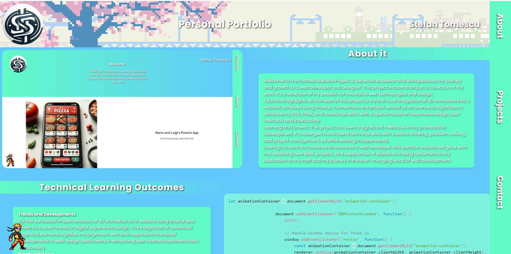
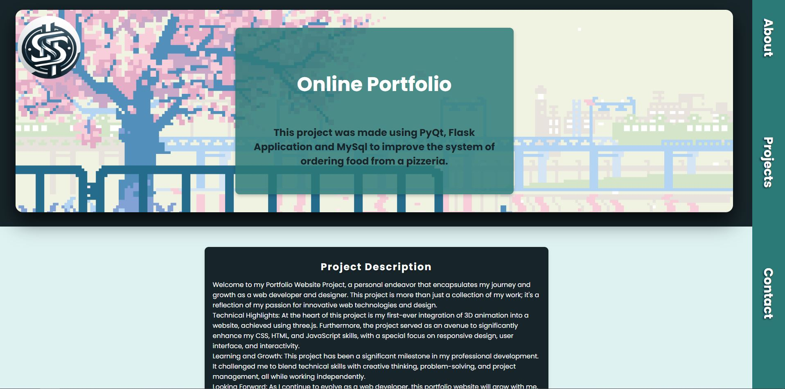
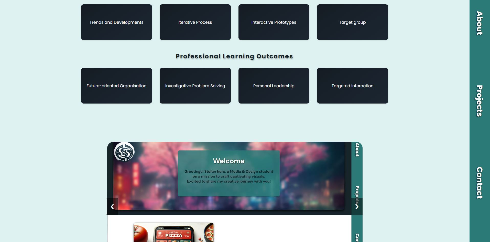
Stages of development
My journey into web design began with an experimental canvas — a playground of hues and a sidebar that served as my compass through the digital landscape. This first rendition of my website was a patchwork of vibrant colors.
As a student of Media & Design, my growth was both nurtured and challenged by the feedback sessions with my professors. Each piece of advice was a puzzle piece, fitting into the grander scheme of my development. I learned to harness tools like Adobe Color to weave a palette that wasn't just visually appealing, but also harmonious and accessible.
Embracing the critiques, I refined my website's aesthetic, focusing on the synergy of colors and the importance of responsive design. The homepage transformed from a static display to an engaging interface, capturing the essence of user experience.
With every iteration, my website became more intuitive, more responsive, and more reflective of the identity I wanted to express. The side-by-side old and newer versions of my site, depicted in the images, illustrate not just a change in visual design, but also my evolution, I learned to listen, adapt, and reimagine.
The layout I envisioned for my portfolio was having the main page, which showcases my projects, and also including the sidebar that would act as the navigation for my website. The sidebar includes a projects, contact and about tab. Each project uses the same layout with pictures, text boxes and code snippets. I intended to add more interesting stuff to the project pages to give a more user-friendly interface to the person seeing my webpage, like GIFs and a movable 3D model with which the user can interact.
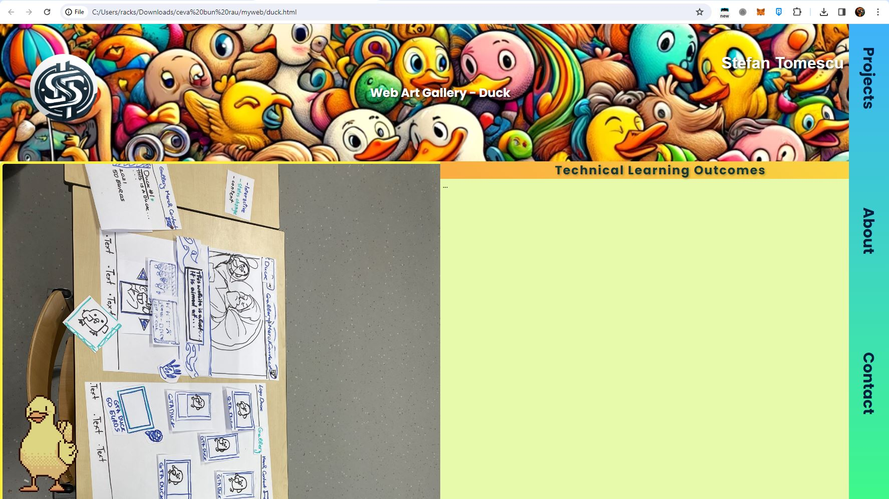
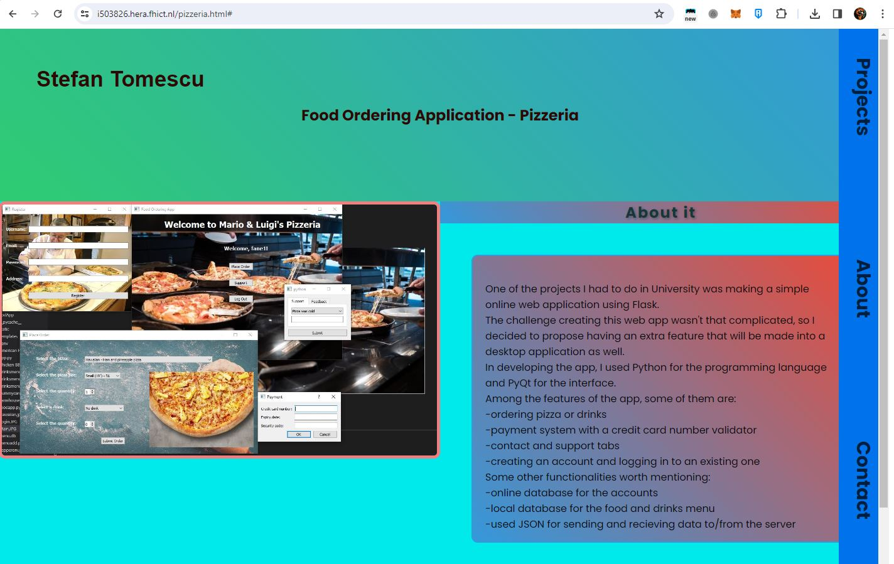
In response to feedback about visual overload, I've replaced the gradient color scheme in the sidebar with a single, consistent color. This change brings a cleaner, more professional look to the interface, enhancing usability while maintaining visual appeal.
Introduction of the 'Portfolio' Project: A significant addition is the fourth project titled 'Portfolio'. This section serves as a meta-documentation of the portfolio itself, offering insights into the developmental journey of the project, showcasing my reflective and iterative approach to web design.
Unified Color Scheme Across Projects: To create a visually coherent experience, I've standardized the color palette across all projects. This consistency not only strengthens the portfolio’s branding but also makes the user journey through different projects seamless and integrated.
Inclusion of Syntax Code Snippets: Elevating the technical display, I've included actual snippets of syntax code alongside images. This addition not only visually enriches the portfolio but also provides a more in-depth understanding of the coding skills and techniques employed in each project.
A fundamental improvement is the transition to a fully responsive design, thereby catering to a wider audience and enhancing accessibility.
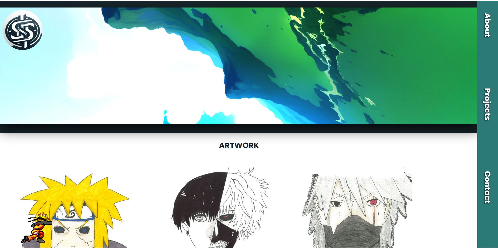
In the creation of this portfolio, every design element has been carefully chosen to harmonize with our distinctive color palette, primarily focusing on shades of light and dark blue. This thematic approach extends across various components, including images and design elements, ensuring a cohesive visual experience. For instance, the striking header on the landing page features a captivating blend of red, pink, and purple, meticulously selected to complement the site's overarching color scheme, thereby enhancing the visual appeal and maintaining consistency throughout. In our commitment to optimizing user experience, we continually refine our design elements based on valuable feedback. An illustrative example of this is the evolution of our text boxes. Initially designed with a light green background and white text complemented by shadow effects, feedback highlighted potential readability issues. In response, we shifted to a more accessible design, opting for white text on a darker background, eliminating text shadows. This adjustment not only improved readability but also aligned with our aesthetic goals, demonstrating our dedication to both form and function. A highlight of our portfolio is the inclusion of 3D animation on the artwork page, representing a pinnacle of user-friendly interactivity. This feature allows visitors to engage directly with the art, fostering an immersive experience that transcends traditional passive viewing. This interactive element underscores our philosophy of integrating innovative technology with artistic expression, ensuring that each visitor's journey through the portfolio is not only visually captivating but also engagingly interactive.
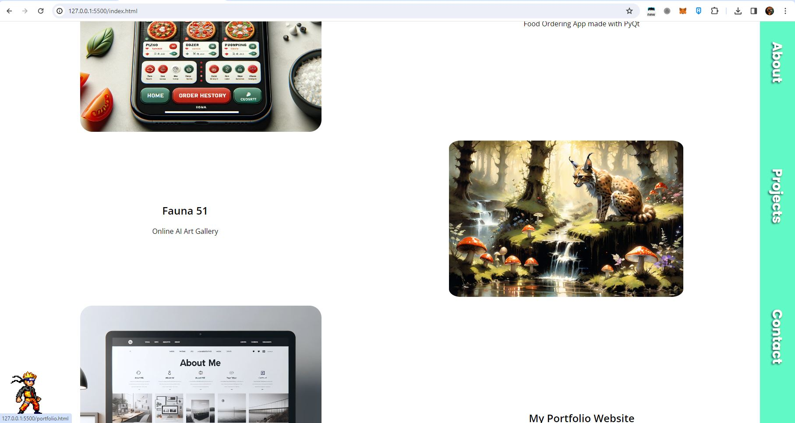